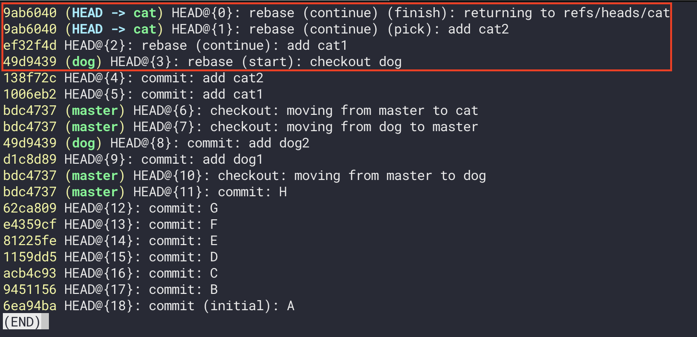

學會以後會覺得它很好用。
簡述
在使用 rebase 以前我們先來看一下一般的 merge 是怎麼併的。
假設目前的紀錄長這樣：
接著我們在 cat 分支執行：
1 | git merge dog // 把 dog 合併到 cat |
解除完 conflict（如果有）以後的結果如下：
好，這就是我們熟知的 merge，但為什麼要特別提這個？這是因為等一下要介紹的 rebase 合併完的結果會跟現在不太一樣。
現在讓我們改用 rebase 來合併剛剛的 cat 和 dog 分支（一樣是在 cat 分支）：
1 | git rebase dog cat |
這段指令的意思是 git rebase <基準點> <被複製的人>，不過你應該比較常看到 git rebase dog 的寫法，因為 git 會把 <被複製的人> 自動帶入目前所在的分支。
至於 <基準點> 跟 <被複製的人> 是什麼意思待會再解釋，我們先看一下 rebase 後的結果會長什麼樣：
在 merge 的時候會自動幫我們產生一個新的 commit 來表示「合併」這件事，可是在 rebase 的時候就沒有這個行為了，看起來就好像直接「把 cat 接到 dog 上面一樣」的感覺。
除了最後的結果長的不太一樣以外，「合併」這件事本身是相同的，所以要用哪一種方式來合併都是可以的。
rebase 背後做了什麼？
前面有提到在使用 rebase 指令時會設定 <基準點> 和 <被複製的人> 這兩個不同的「對象」，所以這到底是什麼？
簡單來說，回憶一下剛剛的例子，我們在用 rebase 做合併時大概做了這幾件事：
- 複製一份
cat身上的 commit 紀錄（建立新的 hash 值） - 把複製過來的紀錄「接」到
dog的最後一筆 commit 上 - 完成 rebase
因為會有「複製」這個動作，所以 <被複製的人> 就是在指你要複製哪一個分支的 commit 紀錄？而複製完以後要再「接到某個分支上」，所以 <基準點> 就是在指要被接上去的那個分支是誰？
這個是我自己的理解方式，如果要看更詳細的說明可以看這篇。
所以剛剛的範例如果改成：
1 | git rebase cat dog |
出來的結果就會變成：
因為 <基準點> 和 <被複製的人> 交換了，所以出來的結果也會不一樣，所以我覺得在使用 rebase 的時候只要搞清楚這兩個角色就不會有太多疑惑了。
順道一提，這兩個詞只是我自己發明的，如果出去外面這樣跟別人說的話別人可能會滿臉問號。
怎麼取消 rebase 後的結果
一樣是剛剛的範例，假設這是 rebase 後的結果：
現在會碰到的問題是，如果想要跳回「還沒有 rebase 前」的狀態該怎麼做？你可能會想說：
啊就直接用
reset HEAD^ --hard不行嗎？」
答案是不行，這樣子只會回到前一個 commit 紀錄而已：

這是因為 rebase 不像 merge 會自動幫我們另外產生一個新的 commit 紀錄，所以你就算想用 reset 回到前一筆紀錄，這筆紀錄也不會是「做 rebase 之前」的那一筆。
這時候有兩種方法：
- 用 reflog 找到 rebase 以前的 commit 紀錄
- 用 ORIG_HEAD 回到上一個「危險操作」以前的位置
這邊先來看第一種，首先下 git reflog 來查看歷史紀錄：

附註：這邊我有重寫過紀錄，所以才不會有剛剛的 reset 紀錄
紅色框起來的部分都是跟 rebase 相關的操作，所以我們只要回到這之前的紀錄就行了。
撇除掉 rebase 後的最新紀錄是 add cat2（138f72c），這個就是我們要的了，所以可以下：
1 | git reset 138f72c --hard |
這樣子就能回到 rebase 前的狀態囉：
接著是第二種方式，這個只要直接下：
1 | git reset ORIG_HEAD --hard |
一樣也能回到 rebase 前的狀態：
很神奇吧！這是因為 ORIG_HEAD 是 Git 中比較特別的紀錄點，它會自動記住上一次「合併分支」、「Reset」或是「Rebase」這些比較危險的操作，也因為這樣所以才會稱為「危險操作」，所以如果你懶的用 reflog 去查 hash 值的話就可以直接用這個方式來 reset，會更方便一些。
總之這兩種方法都是 OK 的，挑一個你喜歡的來用就行了。